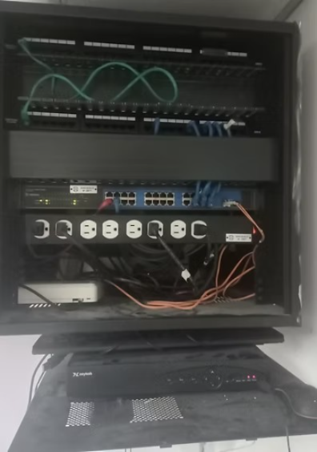

¿Qué es el Proyecto?
El proyecto consistió en la revisión integral, diagnóstico y recuperación de la conectividad de red en el área del comedor de la Contraloría. Este punto de acceso vital presentaba fallas intermitentes o nula funcionalidad durante años. El foco del trabajo fue restaurar y sanear el gabinete rack que contenía los switches y el cableado estructurado asociado.
- Objetivo Físico: Restaurar la funcionalidad al 100% de los puntos de red dañados.
- Componentes Clave: Gabinete rack, switches de red, patch panel y cableado UTP.
- Impacto: Restablecer el acceso a la red de datos a equipos críticos del área.
¿Por qué se Realizó? (Diagnóstico y Necesidad)
La necesidad de este proyecto se originó en la degradación de la infraestructura física que afectaba directamente la operatividad y la seguridad en una zona de alto tráfico:
- Fallas Acumuladas:Los puntos de red dañados o desconectados creaban "zonas ciegas" sin acceso a los recursos de la red institucional, impidiendo la conexión de equipos de control o puntos de venta.
- Riesgo de Estabilidad: El estado desordenado y dañado del cableado dentro del rack generaba interferencias electromagnéticas y fallas difíciles de diagnosticar, afectando potencialmente la estabilidad de toda la red.
- Trazabilidad: Se requería estandarizar y documentar el cableado para facilitar el mantenimiento futuro y el diagnóstico rápido de fallas, tarea imposible con el estado previo del rack.

¿Cómo se Implementó? (Metodología Técnica)
La implementación se abordó en tres fases enfocadas en el saneamiento y la restauración física:
- Fase I: Diagnóstico
- Identificación y censo de todos los puntos de red del área.
- Uso de certificador/tester de red para identificar cables cortados o pares invertidos.
- Fase II: Saneamiento y Reestructuración
- Reemplazo de puertos defectuosos en switches y cambio de patch cords dañados.
- Ponchado profesional bajo estándares TIA/EIA 568A/B en patch panels y jacks.
- Organización y etiquetado meticuloso del cableado dentro del rack.
- Fase III: Verificación y Documentación
- Pruebas de velocidad y ping para asegurar la calidad de la señal.
- Creación de un diagrama de mapeo final para futuras auditorías.
Conclusión (Impacto)
La intervención logró recuperar la operatividad total del área, garantizando una red estable y documentada. Este proyecto demuestra la importancia de mantener una infraestructura física organizada como base fundamental para cualquier sistema de información institucional.